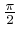
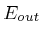
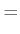
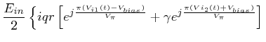
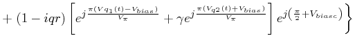
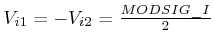
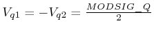

Next: fiber Up: List of Functions Previous: phase_modulator
Modulate the optical field using a QI Mach-Zehnder modulator
E=QI_MODULATOR(E,MODSIG_I,MODSIG_Q)
E=QI_MODULATOR(E,MODSIG_I,MODSIG_Q)
E=QI_MODULATOR(E,MODSIG_I,MODSIG_Q) modulates the optical field using a QI Mach-Zehnder interferometer (QI-MZI) [15,16]. The QI-MZI is basically a Mach-Zehnder super-structure, i.e. a MZI on whose arms are placed two standard MZI. Moreover on one of the two arms the MZI is followed by a phase shift. The schematic representation of a QI-MZI is reported in Fig. 2.3.
The model of the QI-MZI is
|  |  |  | |
|  |
 and  are the in-phase and in-quadrature electrical driving signals produced by electricsource.
E=QI_MODULATOR(E,MODSIG_I,MODSIG_Q, OPTIONS) can modify the parameters of the QI-MZI. OPTIONS is an optional structure whose fields can be:
electricsource, lasersource, mz_modulator
A description of the QI Mach Zehnder modulator (also called dual parallel Mach-Zehnder modulator) is given in [15,16].
Optilux toolbox reference manual